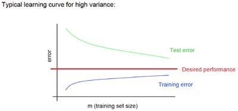
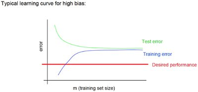

@Author hehaoxing
Supervised Learning
Unsupervised Learning
Sklearn API/class
训练集（练习），验证集（小考），测试集（最终考）
.astype(str)
#类别转换，重要
np.set_printoptions(precision=2) #设置输出精度
numpy.digitize(x, bins, right=False)
返回每个输入所在的桶
Return the indices of the bins to which each value in input array belongs.
>>> a = np.ones((2,2))
>>> b = np.eye(2)
>>> print np.vstack((a,b))#铅直合并
[[ 1. 1.]
[ 1. 1.]
[ 1. 0.]
[ 0. 1.]]
>>> print np.hstack((a,b))#水平合并
[[ 1. 1. 1. 0.]
[ 1. 1. 0. 1.]]
实现步骤：
1.np.digitize对数据进行分桶。
2.对分桶后的结果，做One-Hot独热编码。即将在哪个桶中变成自身的一个维度。
3.将数据与分桶项使用np.hstack水平合并，作为输入；将结果作为输出进行拟合。
4.由于数据只能出现在一个桶中，桶的存在对数据实现了分段。
含义即按照数据与它所在的桶这两项属性，对数据进行了线性拟合：
k(x+bucket(x))+ｂ＝ｙ，拟合生成的模型本身是多项式线性模型。 因为bucket(x)本身即可用分段函数的形式表示。
当然也可以kx(1+bucket(x))+b=y，即在哪个桶中也有一定的值，具有一定的拟合意义。
预测时输入数据与所在桶的属性即可完成任务。
Code:
***
which_bin = np.digitize(X, bins=bins)
***
X_binned = encoder.transform(which_bin)
X_combined = np.hstack([X, X_binned])
reg = LinearRegression().fit(X_combined, y)
line_combined = np.hstack([line, line_binned])
plt.plot(line, reg.predict(line_combined), label='linear regression combined')
多项式与高次拟合在上一节中已经讲过，忽略。
1. 单变量分析：
多用于线性模型。
检验特征与最终结果的相关性，取最相关的若干项。
sklearn.feature_selection.SelectPercentile
参数：
score_func : callable
评分函数。
对于regression问题，可以使用f_regression指标。
对于classification问题，可以使用chi2或者f_classif变量。
percentile : int, optional, default=10
保留特征的百分比。
属性：
scores_ : array-like, shape=(n_features,)
特征分数
pvalues_ : array-like, shape=(n_features,)
方法：
fit(X, y) Run score function on (X, y) and get the appropriate features.
fit_transform(X[, y]) Fit to data, then transform it.
get_params([deep]) Get parameters for this estimator.
get_support([indices]) Get a mask, or integer index, of the features selected
inverse_transform(X) Reverse the transformation operation
set_params(\*\*params) Set the parameters of this estimator.
transform(X) Reduce X to the selected features.
2. 基于模型的特征选择
大概是应为L1截断性
sklearn.feature_selection.SelectFromModel
参数：
estimator : object
预测器。即算法类。
threshold : string, float, optional default None
用于特征选择的阈值。 保留其重要性大于或等于的特征，而丢弃其它特征。
"median","mean"
默认L1参数惩罚或mean
prefit : bool, default False
是否期望预取模型直接传递到构造函数中，默认否。
方法：
fit(X[, y]) Fit the SelectFromModel meta-transformer.
fit_transform(X[, y]) Fit to data, then transform it.
get_params([deep]) Get parameters for this estimator.
get_support([indices]) Get a mask, or integer index, of the features selected
inverse_transform(X) Reverse the transformation operation
partial_fit(X[, y]) Fit the SelectFromModel meta-transformer only once.
set_params(\*\*params) Set the parameters of this estimator.
transform(X) Reduce X to the selected features.
3. RFE逐步特征删除
即递归删除重要性低的特征，知道特征数量满足要求。
sklearn.feature_selection.RFE
参数：
estimator : object
预测器
n_features_to_select : int or None (default=None)
需要的特征数，默认选一半
step : int or float, optional (default=1)
如果大于或等于1，则step对应于在每次迭代时要移除的（整数）个特征数。
如果在（0.0，1.0）内，则step对应于在每次迭代时要删除的要素的百分比（向下舍入）。
verbose : int, default=0
输出冗余度控制
属性:
n_features_ : int
The number of selected features.
support_ : array of shape [n_features]
The mask of selected features.
ranking_ : array of shape [n_features]
方法：
decision_function(\*args, \*\*kwargs)
fit(X, y) Fit the RFE model and then the underlying estimator on the selected features.
fit_transform(X[, y]) Fit to data, then transform it.
get_params([deep]) Get parameters for this estimator.
get_support([indices]) Get a mask, or integer index, of the features selected
inverse_transform(X) Reverse the transformation operation
predict(\*args, \*\*kwargs) Reduce X to the selected features and then predict using the underlying estimator.
predict_log_proba(\*args, \*\*kwargs)
predict_proba(\*args, \*\*kwargs)
score(\*args, \*\*kwargs) Reduce X to the selected features and then return the score of the underlying estimator.
set_params(\*\*params) Set the parameters of this estimator.
transform(X) Reduce X to the selected features.
4.序列化特征选择
???
eg:
from mlxtend.feature_selection import SequentialFeatureSelector
sfs = SequentialFeatureSelector(LogisticRegression(), k_features=40,
forward=True, scoring='accuracy',cv=5)
sfs = sfs.fit(X_train, y_train)
LogisticRegression().fit(sfs1.transform(X_train), y_train).score(sfs.transform(X_test), y_test)
1. 交叉验证：
含义：将数据集进行切分，每一块数据都当做测试集，其他当做训练集。最终评估准确度的过程。
sklearn的交叉验证：
1. sklearn.model_selection.cross_val_score(estimator, X, y=None,
groups=None, scoring=None, cv=None, n_jobs=1, verbose=0, fit_params=None, pre_dispatch='2*n_jobs')
参数：
estimator ：评估器
Ｘ,y ：输入与输出
groups ：将数据集拆分成列/测试集时使用的样本的组标签。
scoring ：记分器，字符串或函数。
cv :数据切分的折数，默认取3。 int, cross-validation generator or an iterable, optional
若为分层(Stratified)的交叉验证，则可使用参数：KFold(n_folds=5)
from sklearn.model_selection import KFold
cv = LeaveOneOut()，则为留一验证。
留一法就是每次只留下一个样本做测试集，其它样本做训练集，如果有k个样本，则需要训练k次，测试k次。
from sklearn.model_selection import LeaveOneOut
cv = shuffle_split，乱序分割交叉验证(洗牌)。
from sklearn.model_selection import ShuffleSplit
cross_val_score(logreg, X, y, labels, cv=LabelKFold(n_folds=3))
数据分组与交叉验证：按照labels中的标签值的顺序与整体比重，对数据进行交叉验证。
labels = [0, 0, 0, 1, 1, 1, 1, 2, 2, 3, 3, 3]
from sklearn.model_selection import LabelKFold
n_jobs ：CPU使用数。
verbose :冗余度。
fit_params ：要传递给评估器的拟合方法的参数。
pre_dispatch :控制在并行执行期间调度的作业数。
返回值：
scores : array of float, shape=(len(list(cv)),)
每次评估器交叉验证的评分列表。
2. 网格搜索：
1. 最简单的网格搜索：
多重for循环，逐步迭代，以找到最优参数。
2. GridSearchCV：
from sklearn.model_selection import GridSearchCV
GridSearchCV(estimator, param_grid, scoring=None, fit_params=None, n_jobs=1, iid=True,
refit=True, cv=None, verbose=0, pre_dispatch='2*n_jobs', error_score='raise', return_train_score=True)
参数:estimator：估计器
param_grid： 参数词典，网格搜索最优参数
eg:
am_grid = {'C': [0.001, 0.01, 0.1, 1, 10, 100],
'gamma': [0.001, 0.01, 0.1, 1, 10, 100]}
scoring: 评分函数
fit_params: 传递给fit方法的参数
idd: 如果为真，则假定数据在折叠上相同地分布，并且损失最小化的是每个样品的总损失，而不是折叠上的平均损失。
refit: Refit the best estimator with the entire dataset. If “False”, it is impossible to make predictions using this GridSearchCV instance after fitting.
cv: 交叉验证的折，同上
error_score: 拟合时发生错误是要设置的值
属性：
cv_results_ : dict of numpy (masked) ndarrays
交叉验证的结果词典，包含详细信息。
best_estimator_ : estimator
最优化的估计器
best_score_ : float
最优化估计器在数据上的评分。
best_params_ : dict
重要，最优化的参数
best_index_ : int
scorer_ : function
用于模型最优化的评分函数
n_splits_ : int
交叉验证的折数。
方法：
decision_function(\*args, \*\*kwargs)
Call decision_function on the estimator with the best found parameters.
fit(X[, y, groups])
fit with all sets of parameters.
get_params([deep])
Get parameters for this estimator.
inverse_transform(\*args, \*\*kwargs)
Call inverse_transform on the estimator with the best found params.
predict(\*args, \*\*kwargs)
Call predict on the estimator with the best found parameters.
predict_log_proba(\*args, \*\*kwargs)
Call predict_log_proba on the estimator with the best found parameters.
predict_proba(\*args, \*\*kwargs)
Call predict_proba on the estimator with the best found parameters.
score(X[, y])
Returns the score on the given data, if the estimator has been refit.
set_params(\*\*params)
Set the parameters of this estimator.
transform(\*args, \*\*kwargs)
Call transform on the estimator with the best found parameters
嵌套交叉验证：
存在内外两层cv的交叉验证。可以通过两层for循环实现。
1.Pipeline
即按照List的顺序逐步完成整个机器学习流程，简化调用。
简单例子(Pipeline与网格搜索结合)：
from sklearn.pipeline import Pipeline
#参数为steps这样一个List
pipe = Pipeline([("scaler", MinMaxScaler()), ("svm", SVC())])
###双下划线的参数嵌套，注意pipeline中的参数名
param_grid = {'svm__C': [0.001, 0.01, 0.1, 1, 10, 100],
'svm__gamma': [0.001, 0.01, 0.1, 1, 10, 100]}
#pipe可以作为估计器的用于网格搜索，当然也可以使用fit/predict等等函数直接预估模型。
grid = GridSearchCV(pipe, param_grid=param_grid, cv=5)
grid.fit(X_train, y_train)
print("best cross-validation accuracy:", grid.best_score_)
print("test set score: ", grid.score(X_test, y_test))
print("best parameters: ", grid.best_params_)
Pipeline可访问的属性：
named_steps : dict
Read-only attribute to access any step parameter by user given name.
Keys are step names and values are steps parameters.
eg:
print(grid.best_estimator_.named_steps["logisticregression"].coef_)
参数的双下划线问题：
以adaboost为例，adaboost有自己的参数，他的base_estimator指向一个弱学习器，这个弱学习器也包含自己的参数，
**为了使用GridSearchCV我们需要使用嵌套参数。在sklearn中我们使用双下划线表示”__”，例如
from sklearn.tree import DecisionTreeClassifier
from sklearn.ensemble import AdaBoostClassifier
from sklearn.grid_search import GridSearchCV
iris = datasets.load_iris()
param_grid = {"base_estimator__criterion": ["gini", "entropy"],
"base_estimator__splitter": ["best", "random"],
"n_estimators": [1, 2]}
dtc = DecisionTreeClassifier()
ada = AdaBoostClassifier(base_estimator=dtc)
X, y = datasets.make_hastie_10_2(n_samples=12000, random_state=1)
grid_search_ada = GridSearchCV(ada, param_grid=param_grid, cv=10)
grid_search_ada.fit(X, y)}
2.make_pipeline函数
比较简单，直接举例：
from sklearn.pipeline import make_pipeline
from sklearn.preprocessing import StandardScaler
from sklearn.decomposition import PCA
pipe = make_pipeline(StandardScaler(), PCA(n_components=2), StandardScaler())
pipe.steps
pipe.fit(cancer.data)
判断方式： overfitting的表现一般是训练集上得分高，而交叉验证集上要低很多，中间的gap比较大 正确率对比(左过拟合，右欠拟合)：  
from sklearn.learning_curve import learning_curve
train_sizes, train_scores, test_scores = learning_curve(estimator, X, y, cv=cv,
n_jobs=n_jobs, train_sizes=train_sizes, verbose=verbose)
#训练集大小与训练集准确度与测试集准确度
train_sizes:训练集最大大小的一部分，其值在（0,1）内；否则它被解释为绝对大小。
train_sizes=np.linspace(.05, 1., 20)
系数和最终的判定能力强弱是正相关